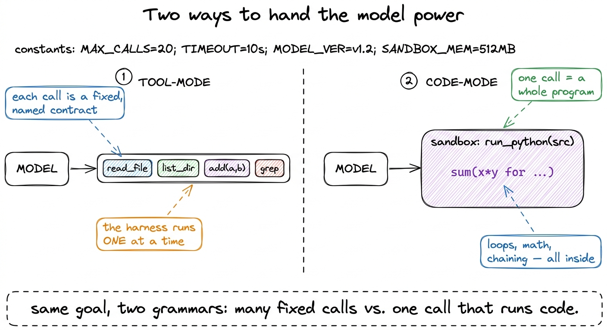
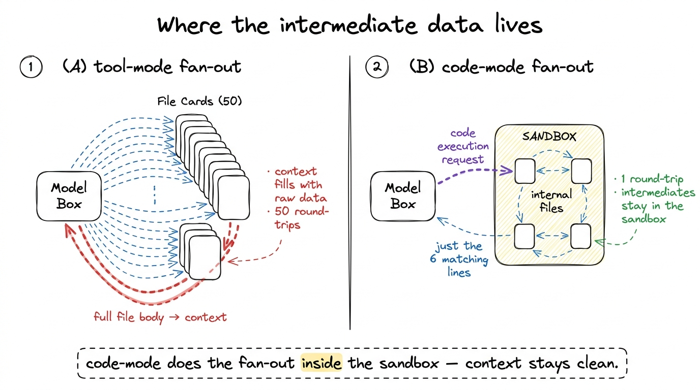
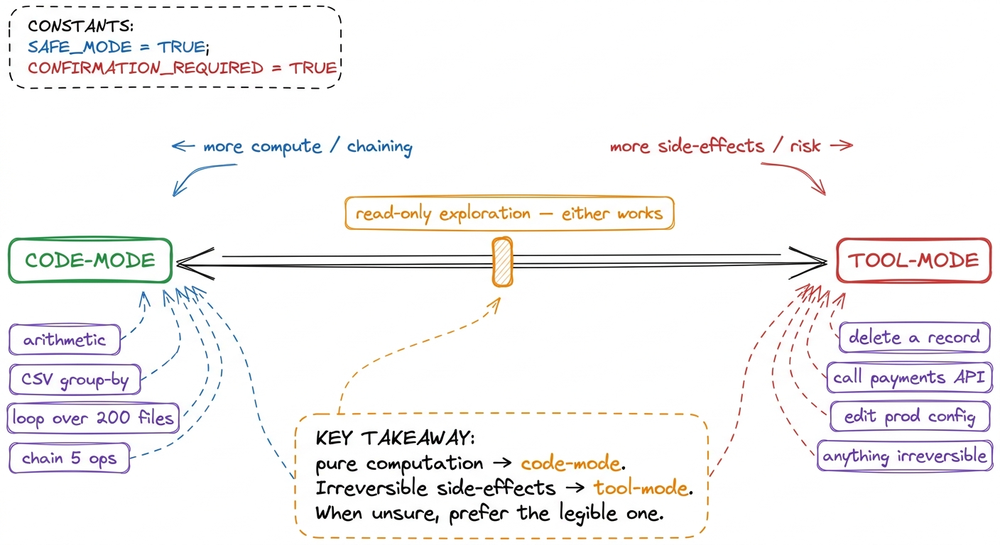
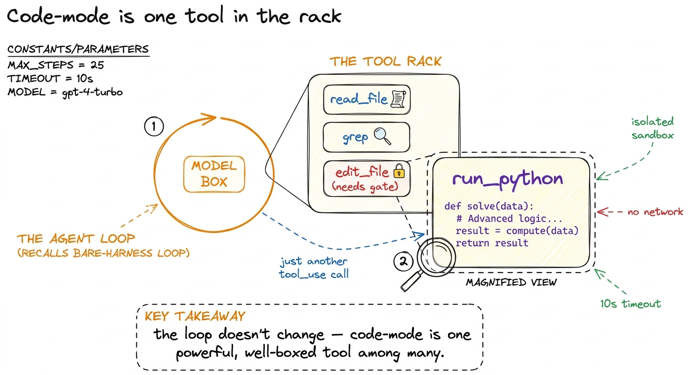

Code-mode vs. tool-mode
There is a moment, once your harness has a healthy set of tools, when you catch it doing something faintly absurd. You ask it to total up the line items in an invoice and it calls a add tool eleven times. You ask it to find the three biggest files in a directory and it lists the directory, reads the sizes back into its own head, sorts them by thinking about them, and reports an answer that is subtly wrong. The model is not stupid here. It is doing arithmetic and data-wrangling the only way your harness left open to it: one fixed tool call at a time, with its own context as the scratchpad.
The fix is not a better add tool. The fix is to notice that sometimes the best tool you can hand a model is a sandbox that runs code the model writes. Instead of asking "what tool call does this," the model asks "what program does this," writes ten lines, and the sandbox runs them. That is code-mode, and it sits opposite the tool-mode we have been building. This chapter is about when each one wins, because a good harness offers both and knows which to reach for.

figure rendering · Tool-mode gives the model a rack of fixed, named contracts and runs thThe same job, done both ways
Let me make it concrete before I argue about it. Suppose the model has a list of (quantity, unit_price) line items and needs the total, but only after applying a 7% discount to any line over $500. In tool-mode, with a multiply and an add tool, the model has to drive the arithmetic itself: multiply each pair, decide per line whether the threshold applies, subtract, then sum — a dozen tool calls, each result flowing back through the model's context, each step a chance to lose a number or misapply the rule.
In code-mode, the model calls a single tool — a sandbox — and hands it a program:
# what the model emits as the argument to a single run_python tool call
lines = [(3, 200), (1, 900), (10, 60), (2, 700)]
total = 0
for qty, price in lines:
subtotal = qty * price
if subtotal > 500:
subtotal *= 0.93 # 7% discount
total += subtotal
print(round(total, 2))One call. The loop, the branch, the arithmetic, and the rounding all happen inside the sandbox, deterministically, and only the final number 3255.0 comes back into the model's context. The model didn't do the math — it described the math and let a real interpreter do it. That is the entire pitch of code-mode: computation belongs in a computer, not in a language model's forward pass.1 This is why "let the model do arithmetic in its head" is a losing bet even for strong models — floating point, large sums, and multi-step conditionals are exactly what an interpreter is for and a next-token predictor is not. Offload it.
Why code-mode wins: compute, chaining, and fan-out
Three shapes of task tilt hard toward code-mode, and they are worth naming because you will see them constantly.
Anything numeric. Sums, averages, unit conversions, date math, percentages, statistics — a model approximates these and a python sandbox computes them exactly. The moment a task has more than one arithmetic step, code-mode is almost always the right call.
Multi-step data operations. "Load this CSV, filter to Q3, group by region, and give me the top five by revenue" is five operations that, in tool-mode, means five round-trips through the model — each one re-reading data into context, each one a token cost and an error surface. In code-mode it is one pandas script the model writes and the sandbox runs, and the model only ever sees the five-row answer.
Chaining and fan-out. When the output of step one feeds step two feeds step three, tool-mode makes the model the plumbing between every stage. Code-mode lets the model write the pipeline as a program — a loop over 200 files, a try/except around a flaky parse — and the intermediate values never touch the context window at all. This is the quiet superpower: code-mode keeps intermediate data out of context. A tool-mode agent that reads 50 files pays for 50 file bodies in its context; a code-mode agent that greps 50 files in a sandbox pays only for the handful of matching lines the program chose to print.

figure rendering · In tool-mode every intermediate result flows back through the model'sIf you have read compaction and summarization, you will recognize this as a context-engineering win in disguise: code-mode is one of the most effective ways to keep a long task from drowning its own context window.
Why tool-mode wins: safety, determinism, and legibility
So why not make everything code-mode? Because the very thing that makes code-mode powerful — arbitrary, model-authored programs running on a real machine — is exactly what makes it dangerous and hard to govern.
Safety and blast radius. A fixed read_file tool can be reasoned about: you know precisely what it can touch, you can validate the path stays inside the workspace, you can allow it without a prompt. A run_python tool can do anything the sandbox permits — open sockets, delete files, exfiltrate secrets — because you cannot enumerate in advance what program the model will write.2 This is why real harnesses that offer code-mode run it in a genuinely isolated sandbox — a container or micro-VM with no network and a scratch filesystem — not just subprocess on the host. Code-mode raises the stakes of sandboxing from "nice to have" to "non-negotiable". The trade is stark: tool-mode's fixed contracts are what let you build tight permission gates; code-mode dissolves the contract into "run whatever," and you have to claw the safety back with isolation instead.
Determinism and auditability. When the model calls delete_record(id=1187), you know exactly what happened and you can log, replay, and undo it. When the model runs forty lines of Python, the effect is whatever the program did — harder to predict, harder to audit, harder to roll back. For anything that mutates real state — writing to a database, hitting a payments API, changing production config — tool-mode's one-action-one-record legibility is worth far more than code-mode's flexibility.
Legibility to the model itself. A curated set of named tools with clear schemas is also a form of guidance — it teaches the model what it's supposed to do, the way a well-designed API teaches a developer.3 Raschka frames this as a useful paradox: the harness gives the model less freedom with fixed tools, yet improves reliability, because a constrained menu of validated actions produces fewer malformed attempts than "write any code you like". Hand a model a blank run_python and it may wander; hand it create_pull_request and run_tests and the shape of the task is legible in the toolset.

figure rendering · A rough decision spectrum: the more a task is pure computation and chaThe synthesis: code-mode as one tool among your tools
Here is the resolution, and it is the way every mature harness actually does it. Code-mode is not a replacement for tool-mode — it is one especially powerful tool inside a tool-mode harness. Your agent loop still works exactly as it did in your first bare harness: the model asks for a tool, the harness runs it, the result comes back. It is just that one of the tools in the rack is run_python, and its "argument" happens to be a whole program.
TOOLS = [
read_file_schema, # tool-mode: fixed, narrow, safe-to-allow
edit_file_schema, # tool-mode: mutates, needs a permission gate
{
"name": "run_python", # code-mode: the escape hatch for computation
"description": (
"Execute a short Python program in an isolated sandbox and return "
"whatever it prints to stdout. Use for arithmetic, data wrangling, "
"and chaining multiple operations. No network; scratch filesystem only."
),
"input_schema": {
"type": "object",
"properties": {"src": {"type": "string"}},
"required": ["src"],
},
},
]
def run_python(src: str) -> str:
# runs in a locked-down sandbox: no network, ephemeral FS, wall-clock timeout
result = sandbox.exec(src, timeout=10)
return (result.stdout + result.stderr)[:4000]Notice what the tool description is really doing: it is telling the model when to reach for code-mode — "arithmetic, data wrangling, chaining." That one sentence is how you steer the model toward code-mode for the tasks where it shines and leave the narrow, side-effecting tools for everything else. The schema is trivial (one field, a string of source); the whole design lives in the description and in the sandbox's constraints.4 This is the same principle from tool schemas as contracts: the schema is the syntax, but the description is where you teach usage. For run_python, the description carries the entire policy of when code-mode is appropriate.
This is genuinely how the field works today. Claude Code's Bash tool is code-mode in shell clothing — the model writes an arbitrary command and a real shell runs it — sitting right alongside narrow, structured tools like Read and Edit. Anthropic's own guidance is to run agents in sandboxed environments with appropriate guardrails precisely because that escape hatch exists. The art is not choosing code-mode or tool-mode globally; it is composing a rack where the safe, legible, structured tools handle side effects and one well-sandboxed code tool absorbs all the computation.

figure rendering · Code-mode doesn't change the loop. It is one tool in the rack — a sandThe rule of thumb, and the bridge
If you want a single sentence to carry out of this chapter: let the model write code when the hard part is computation, and give it a fixed tool when the hard part is a consequence. Arithmetic, filtering, sorting, chaining, fanning out over many files — hand it a sandbox and let it program. Deleting a record, calling an API that charges money, editing production config — hand it a narrow, named, auditable tool with a permission gate in front, and keep the blast radius small.
Most real tasks are a blend, and the beauty of treating code-mode as just another tool is that the model gets to make the choice turn by turn, reaching for the sandbox to crunch numbers and for the structured tools to commit changes — all inside the same loop you already built.
That escape hatch is only as safe as the box it runs in, though. A run_python tool without real isolation is just rm -rf with extra steps. So the next thing we have to build is the box itself: sandboxing and blast radius, where we make it genuinely safe to let a model run code it wrote.